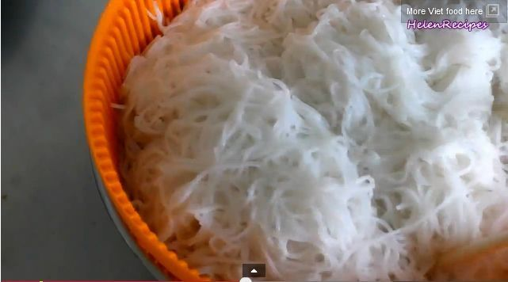

Vietnamese Noddle Soup (Bun Bo Nam Bo) Recipe
Ingredients
- 500 g beef (1.1 lb), (eg. rump steak) finely sliced against the grain
- 1 tbsp oyster sauce
- 1 tbsp garlic minced
- 1 tbsp lemongrass minced
- ½ tsp salt
- ½ tsp pepper
- 1 tsp chicken stock (or sugar)
- 3 tbsp vegetable oil
- 500 g dried rice vermicelli (1.1 lb)
- ½ cup pickled daikon and carrots (do chua)
- 4 tbsp crispy fried shallot
- 4 tbsp roasted peanuts crushed
- Fresh greens: lettuce, mint, perilla, cilantro etc. washed and roughly chopped
- 200 g bean sprouts (7 oz)
- 1 cucumber , julienned
1.In a mixing bowl, combine the beef, oyster sauce, half the minced garlic, minced lemongrass, salt, pepper,
chicken stock and 1 tbsp vegetable oil. Mix well and let marinate for at least 15 minutes.
2.In a heated wok, add 2 tbsp vegetable oil and the rest of the minced garlic and sauté till fragrant.
Then add the marinated beef and stir-fry on high heat until the beef is no longer pink.
3.Cook the rice vermicelli following the package instructions.
4.To assemble the fish, place some fresh greens in the bowl, then a handful of rice vermicelli.
Top with the stir-fried beef, pickled daikon and carrots (do chua), fried shallot and crushed peanuts.
Pour some light dipping fish sauce over the noodle (like salad dressings). Stir well and serve.
READY TO EAT !